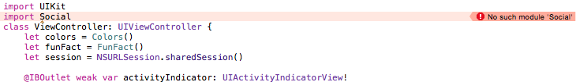
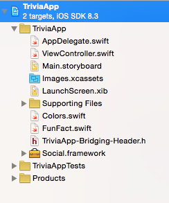
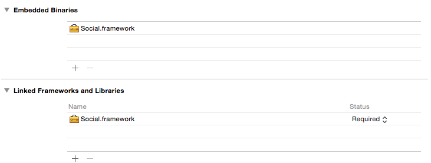
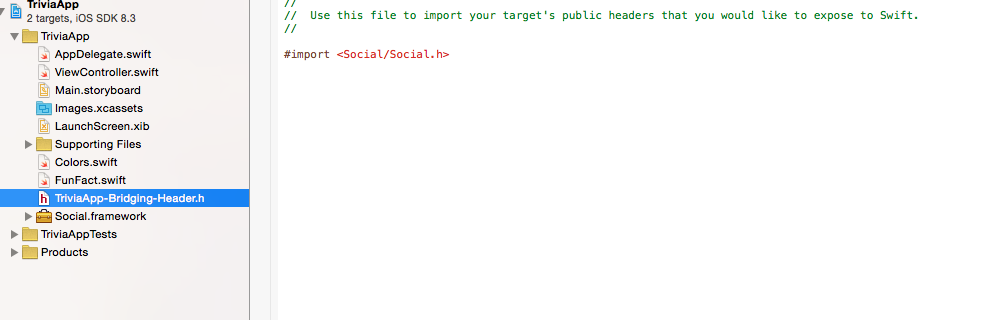

Getting error "No such module" using Xcode, but the framework is there
I'm currently coding in Swift, and I've got an error:
No such module Social
But I don't understand, because the module is in my project, declared in "Linked frameworks and Libraries" and in "Embedded Binaries".
The frameworks is in Objective-C, so I wrote a Bridge Header for it.
Please, how can I make Xcode recognize the framework?




Answer
I'm not sure why this happens, but one way to solve your issue is to go into
your build settings and defining the Framework Search Paths to a
folder which contains the frameworks in question. If the frameworks are placed
in your project directory, simply set the framework search path to
$(SRCROOT) and set it to recursive.
Suggest
I'm not sure why this happens, but one way to solve your issue is to go into
your build settings and defining the Framework Search Paths to a
folder which contains the frameworks in question. If the frameworks are placed
in your project directory, simply set the framework search path to
$(SRCROOT) and set it to recursive.